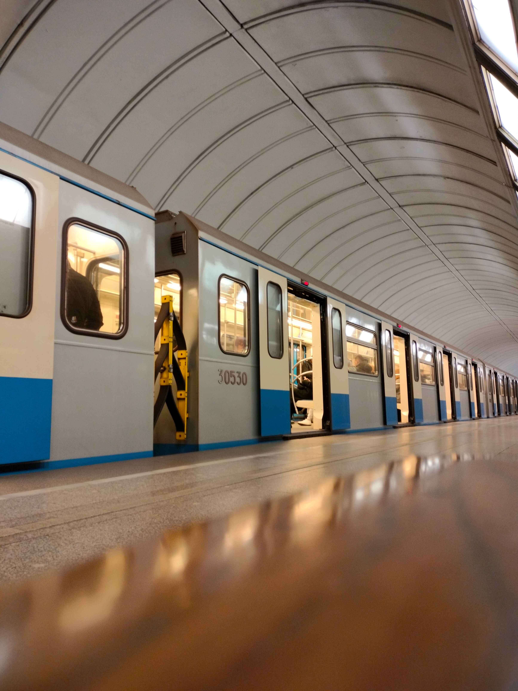
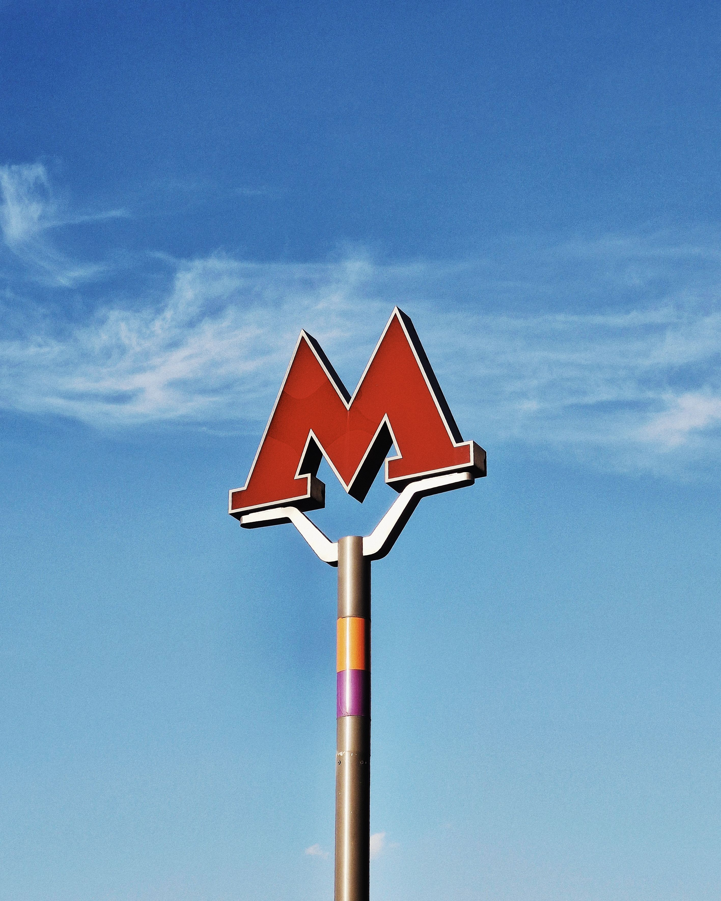

Швидкий, зручний та надійний транспорт мегаполіса
Метрополітен — це основа транспортної системи великих міст. Він дозволяє мільйонам пасажирів щодня швидко діставатися до місця призначення, минувши наземні затори та дорожній трафік.


Підготував студент групи 302-ТН Грипась Д.О.